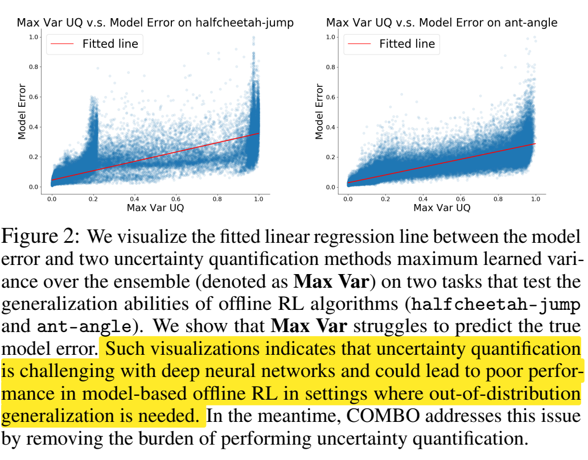
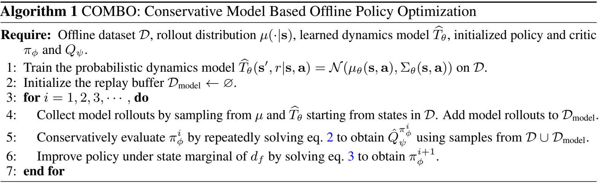
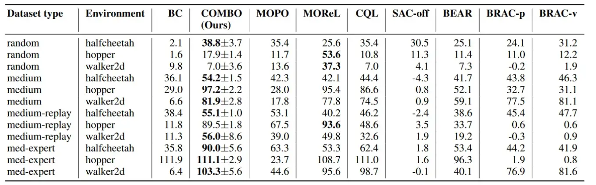

COMBO
COMBO-Conservative Offline Model-Based Policy Optimization
Motivation
offline RL的主要思想是将online RL结合conservatism或regularization。一般的model-free算法直接在策略或值函数上结合conservatism，它们学习的状态被限制在offline dataset中，从而将导致一个保守的算法。相反，model-based算法基于不确定性量化能够使得状态和动作空间均一定程度脱离offline dataset，潜在具有更强的泛化能力。而model-based算法的主要问题是其生成的路径可能与dataset中分布不一致。
为了解决model-based算法在offline中模型产出分布不一致带来的估计问题，一般有两种思路：
- 设计model error oracle，即在所有状态-动作对上衡量模型误差估计，模型越不确定的地方这个惩罚的值越大。
- 让策略贴近dataset中的策略分布，同时让偏离dataset中不被高估，即对于偏离dataset数据稀薄的state-action tuple，我们总是对其进行保守估计。
COMBO这篇论文采用的就是后者，在CPL（model-free的offline RL算法）的基础上，引入了model-based的模型，从而让保守惩罚尽可能只针对偏离原始dataset分布情况，而不是像CPL是对一个state的所有action都进行偏离惩罚。
COMBO认为不确定性量化技术其理论推导中依赖于model error oracle，即在所有状态-动作对上衡量模型误差的上界。而在实际使用过程中过度依赖于启发式的不确定性量化技术，这在复杂的数据集或者较深的神经网络上是困难且难以被信赖的。本文据此提出了一个算法替换掉显式的不确定性衡量，并认为不确定性估计对于offline RL是不必要的。

Contribution
-
提出了COMBO
-
从理论上证明了COMBO学到的Q函数是真实Q函数的下界，并且相较于model-free算法CQL，其拥有更紧的下界。且COMBO不需要不确定性的量化
-
实验结果很好，即使是用于基于图片的任务
Preliminaries
Definition
定义策略的折扣状态访问分布为：
指模型M基于策略产生的rollout中t时刻抵达状态s的概率。系数是为了保证分布的归一化。
同理我们写出状态-动作对的联合分布：
实际上就是。
RL的目标是：
记产生offline dataset的行为策略是即数据集依据下式采样：
，定义
Model-free Offline RL Algorithm
model-free中一类解决MDP的方式是基于贝尔曼方程使用价值函数不断更新，但是将这些方法直接扩展到offline RL中会导致不好的结果因为训练过程中目标和策略和采样策略产生的巨大分布偏移和对Q函数的高估，且不会有机会去真的于env交互修正这些高估&拓展新策略(数据稀疏部分连环境模型和回报都没法估计)。
COMBO前身是CQL，其更新Q函数规则如下：
其中
是贝尔曼方程基于采样的算子。上式中第二项是一般的 TD 更新，而第一项用于惩罚状态在 offline dataset 中而动作作不在 offline-dataset 中的情况。这将使得对于任何的策略其值函数都是一个较为保守的估计，从而降低过估计和分布偏移的影响。
这个公式中的方法叫作Conservative Q-Learning (CQL)，它通过对Q函数进行保守的估计，避免对未观测到的数据（未在数据集中存在的动作）进行过高的估计。这种保守的估计方式可以有效减轻Q值过估计偏差和分布偏移问题。CQL的主要思想是通过在离线数据中，针对未观察到的动作施加惩罚，从而保守地估计Q函数。注意这里只是针对特定state下的action分布的偏离惩罚。
- 为什么这个公式能实现保守估计
-
对分布外动作进行惩罚：通过在数据集中没有观察到的动作（分布外动作）上引入负惩罚项，CQL 刻意降低了Q值的估计，这意味着在那些不确定或未观察到的数据上，算法不会过于乐观地估计其回报。这样可以避免模型在实际部署时由于对未知区域过于乐观而导致的糟糕表现。
-
Q函数的稳定性：第二部分确保了 Q 函数与贝尔曼方程一致，并与当前策略保持一致性。这部分使得 Q 值的更新在数据集中的状态-动作对上稳定地收敛，减少了因为分布偏移引起的过高估计。
-
权衡保守性与贝尔曼一致性： 是一个调节参数，用于权衡保守估计和贝尔曼一致性之间的影响。较大的 会使算法更加保守，较小的 则会允许算法在探索分布外动作时更具进取性。
在获得 Q 函数的估计值 $ \hat{Q}^\pi $ 后，策略的更新如下：
Model-based Offline RL Algorithm
给定 offline dataset $ D $，动态模型设为 $ \hat{T} $，一般模型的训练使用最大似然估计：
上述方法的直接使用会在 offline RL 设置下失败，因为分布偏移和模型偏差。
经验 MDP（Empirical MDP） vs. 学习 MDP（Learned MDP）
| 特点/属性 | 经验 MDP（Empirical MDP） | 学习 MDP（Learned MDP） |
|---|---|---|
| 数据来源 | 基于真实观测到的转移计数 | 基于离线数据集训练的动态模型 |
| 误差类型 | 存在采样误差，尤其在数据稀疏的情况下 | 存在模型偏差，模型可能不准确 |
| 泛化能力 | 只能处理数据集中存在的状态-动作对 | 对未见过的状态-动作对有一定的推断能力 |
| 计算复杂性 | 计算简单，只需统计频率 | 训练模型需要较高的计算资源 |
| 数据依赖 | 完全依赖离线数据，无法处理新情况 | 可以通过模型推断处理数据集中未见过的情况 |
| 无偏性 | 无偏的，但可能会有采样误差 | 可能存在系统性模型偏差 |
什么时候用哪种 MDP？
- 使用经验 MDP 的场景：
当数据量充足，且不需要泛化到未见过的状态时，经验 MDP 是一个更简单且可靠的选择。特别是在数据稠密的环境中，经验 MDP 无偏且误差较小。
适用于状态空间相对较小、动态模型不复杂的场景。 - 使用学习 MDP 的场景：
当需要处理数据集中未见过的状态-动作对时，学习 MDP 是更好的选择，因为它有泛化能力，可以通过模型进行推断。
适用于状态空间较大或数据稀疏的场景，通过学习一个动态模型能够更好地应对这种情况。
在处理复杂的真实世界问题时（例如自动驾驶、机器人控制），通常采用学习 MDP，因为这些问题的状态空间很大，无法依赖经验 MDP 来准确建模。
COMBO Method
本文的目标是设计一个model-based offline算法，优化策略表现的下界，并且不对不确定性进行量化，实现方式是通过对CQL进行推广。
Conservative Policy Evaluation
本节的目的是学到一个保守的策略评估：
比较原始的 CQL，区别在于 $ \rho(s, a) $ 和 $ d_f $
其中
其中 RMS 的第一项是在学习的模型 $ \hat{M} $ 中基于策略 $ \pi $ 所获得的折扣状态访问概率分布，能够通过使用在 $ \hat{M} $ 产生的 rollout 后采样获得。
其中 $ d_f $ 指的是 offline dataset 和模型产生的 rollout 以比例混合的数据集，其中的 $ u(\cdot|s) $ 与 CQL 中定义的相同，指的是模型 rollout 中使用的策略分布，可以是 $ \pi $ 也可以是其它例如均匀分布等。
通过上述公式，能够对模型-rollout 所产生的状态动作对进行保守估计降低 Q 值，并且对 offline dataset 中真实的状态动作对作对提升 Q 值，在这样加保险下，使状态和动作都有可能脱离offline dataset分布的机会。
Q 函数的更新基于贝尔曼方程使用了 offline 数据和 model-rollout 产生的数据，类似于 Dyna-Q。
相比于 CQL 和其它 model-free 算法，COMBO 能够在更丰富的状态分布上（而不是仅限于 offline 所限定的状态分布）学习 Q 函数，得益于 $ d_{\mathcal{M}_c}^{u}(s, a) $ 的设计。
特别要注意这个式子和之前CQL的式子中惩罚部分的区别，CQL是对于一个state的所有action都进行惩罚（对应到式子里就是取uniform distribution），而COMBO是惩罚按照从model中rollout出来的数据进行惩罚。
Policy Improvement Using a Conservative Critic
在获得Q函数的估计值后，策略的更新方式如下。其中
在实际使用过程中，ρ中混合一点offline dataset的状态，会使得训练更稳定。

Model in COMBO: A Practical Implementation
COMBO中的模型实现：实用实现细节
在 COMBO（保守的离线模型优化策略）中，实现大体遵循了 MOPO（基于模型的离线策略优化） 框架，但有一个关键区别：我们进行了保守的策略评估，而不是像 MOPO 那样使用基于不确定性的奖励惩罚机制。以下是 COMBO 中模型实现的关键点：
1. 概率动态模型
COMBO 使用一个概率动态模型，该模型由一个神经网络表示，网络参数为 $ \theta $。神经网络根据当前的状态 $ s $ 和动作 $ a $，生成下一个状态和奖励的高斯分布：
- $ \mu_\theta(s_t, a_t) $：表示下一个状态的均值预测。
- $ 2\Sigma $：表示方差，反映了模型的不确定性。
这个动态模型通过最大似然估计（Maximum Likelihood Estimation，MLE）进行训练，即通过最大化模型生成的状态和奖励分布的概率来逼近离线数据中的真实转移函数。
2. 离线数据的增强
虽然模型通过神经网络生成数据，但在策略评估时，COMBO 会将离线数据集中的状态进行采样并增强 $ \rho $ 分布。与直接使用模型生成的样本相比，使用离线数据中的状态能够带来更稳定的策略改进，因为这些状态已经真实地被观察到过。
COMBO中的超参数选择：完全离线的超参数调优方法
在离线强化学习中，超参数调优一直是一个挑战，因为传统方法中经常需要通过在线策略评估（例如，在线 rollouts）来微调超参数。但是，COMBO 的目标是完全依赖离线数据，因此我们设计了一种自动化的、完全基于离线数据的超参数调优方法。
1. 避免在线 rollouts
在传统的基于模型的离线 RL 方法中，超参数选择通常需要依赖在线策略 rollouts，即通过与环境的在线交互来调整参数（例如 $ \beta $ 和 $ f $）。但是，这种方法违背了离线 RL 完全基于历史数据学习的初衷，因此在 COMBO 中，我们避免了在线 rollouts，所有的超参数调优都基于离线数据进行。
2. 正则项作为指标选择超参数
在 COMBO 中，我们通过对正则项的值进行计算来选择超参数。具体来说，我们利用公式中 Q 值的惩罚项：
这个正则化项衡量了模型生成的状态-动作对上的 Q 值与真实数据集上的 Q 值之间的差异。通过选择能使这个差异最小化的超参数组合，COMBO 能够避免模型生成的状态-动作对出现过度乐观估计。
3. 自动化搜索
在实践中，我们为每个任务设定一个小的离散超参数集（例如 $ \beta $ 和 $ f $ 的不同组合），并使用上面提到的正则项作为目标函数，寻找能够最小化该目标函数的超参数。这样，COMBO 可以完全基于离线数据来自动选择超参数，不需要额外的在线环境交互。
4. 如何选择 和 ？
- $ \beta $ 控制了保守性。较大的 $ \beta $ 值意味着模型会更加保守，并对分布外的状态-动作对惩罚得越厉害，从而抑制乐观过估计。
- $ f $ 决定了从真实数据和模型生成数据中采样的比例。较大的 $ f $ 值意味着更多地依赖真实的离线数据，而较小的 $ f $ 值则意味着更多地使用模型生成的 rollouts。
- 总的来说，我觉得paper的意思是，先遍历可能得所有组合，然后再去计算那个惩罚项（其实惩罚项和都无关），最后选择最小的那个组合。
在 COMBO 的实验中，正则项的最小化使得超参数选择更加鲁棒，尤其是在复杂的任务中，这种完全离线的超参数选择方法表现得非常稳定。
COMBO vs. CQL+MBPO
1. CQL+MBPO 的原理
- CQL+MBPO 是将两个之前的方法CQL 和 MBPO 直接组合而成的一个方法。具体做法是：
- CQL：保守地正则化 Q 值，以防止对未见过的动作进行过于乐观的估计。
- MBPO：基于模型生成新的状态-动作对（model rollouts），扩展离线数据集。
这种方法通过使用 CQL 来正则化 Q 值，同时利用 MBPO 生成额外的数据。然而，CQL+MBPO 的正则化仅仅是在数据集中已经观察到的状态上对未见过的动作进行惩罚，而不是对模型生成的分布外状态进行惩罚。
2. COMBO 的核心机制
- COMBO 与 CQL+MBPO 的区别在于，COMBO 采用了与 CQL 类似的 Q 值正则化策略，但应用的方式不同：
- CQL：只对在数据集中观察到的状态上的未见过的动作进行惩罚（例如，如果某个状态在数据中存在，但某些动作没有出现，CQL 会对这些动作进行惩罚）。
- COMBO：则对模型生成的分布外状态进行惩罚，这些状态是通过模型生成（rollout）出来的，而不是从原始数据集中直接获得的。同时，COMBO 还在数据集中观察到的状态-动作对上最大化 Q 值。这意味着 COMBO 在优化时不仅惩罚分布外的状态，还会在已见的状态上尽可能提升策略。
此外，COMBO 同样使用了 MBPO 的模型 rollouts 生成额外的数据来训练 Q 值函数，从而能够扩展数据集、提高泛化能力。
3. 关键区别
-
CQL+MBPO：
- 仅对离线数据中观察到的状态进行正则化，对这些状态中的未见过动作进行惩罚。
- MBPO 生成额外的状态-动作对用于数据扩展。
- 它在生成的状态上没有进行额外的保守性处理，只依赖于对已见状态的处理。
-
COMBO：
- 在模型生成的分布外状态上进行 Q 值惩罚，而不仅仅是对已见状态的未见动作进行惩罚。
- 在已见状态-动作对上最大化 Q 值，这使得在已见数据上能够尽量优化策略。
- 同时使用了 MBPO 的模型 rollouts 来生成额外的训练数据，但通过对这些生成的数据进行惩罚，避免了过于乐观的估计。
4. 实验结果和分析
从实验结果来看，CQL+MBPO 在泛化能力要求较高的任务上表现明显不如 COMBO。原因可以归结为以下几点：
- 分布外状态的处理：CQL+MBPO对所有状态的动作保守处理，而 COMBO 则重点对模型生成的分布外状态进行惩罚。这意味着在面临分布外数据时，COMBO 的策略能够更有效地避免对未见状态-动作对的过度乐观估计，进而提升其泛化能力。
- 已见状态的优化：COMBO 在已见的状态-动作对上不仅不进行惩罚，还会积极最大化 Q 值，从而使得它能更好地利用已有数据进行策略优化。而 CQL+MBPO 只在处理未见动作时有所调整，因此可能导致策略在数据覆盖的区域上表现较差。
5. 总结
- CQL+MBPO 的正则化只作用于数据集中已见状态的未见动作，而没有处理分布外的状态，因此它在面对需要广泛泛化的任务时表现不如 COMBO。
- COMBO 则通过对模型生成的分布外状态进行惩罚（对不在样本和模型的其余Q不做惩罚，不像前者不在样本就都惩罚），同时在已见状态上最大化 Q 值，成功地在提高策略泛化能力和优化已有数据上的表现之间取得了平衡。
Theoretical Analysis of COMBO
- 优化下界：COMBO 通过优化策略回报的下界，确保其策略估计不会过于乐观，特别是在面对未见过的状态-动作对时。
- 支持样本内外的处理：当策略的状态-动作对处于行为策略的支持内时，COMBO 提供接近真实的估计；而在支持外时，它采取保守的估计。
- 策略改进保证：COMBO 保证在策略优化中性能至少优于行为策略，提供稳健的策略改进。
- 与无模型方法的对比：相比无模型方法，COMBO 能够在保持保守的同时，进行更多的合理探索，从而在某些场景下表现得更为灵活。
COMBO Optimizes a Lower Bound
…
COMBO is Less Conservative Than CQL
…
Safety Policy Improvement Guarantees
…
上述三个证明可以看论文附录，或者知乎article by betray12138中的解释性证明。
Experiments
model-based offline算法在由多种策略收集并具有多样化的状态动作分布的数据集（random、medium-replay）上通常表现更好，而model-free offline算法在具有狭窄分布的数据集（medium、medium-expert）上表现更好。但是这些结果中，与现有的model-free和model-based相比，COMBO在不同类型数据集中普遍表现良好，这表明COMBO对不同的数据集类型具有鲁棒性。

Conclusion
COMBO 相较于之前的离线强化学习方法有一些显著的优势，尤其是在处理基于模型（model-based 和 无模型（model-free算法的限制时更加灵活有效。
a) 利用离线数据和模型生成数据的结合
COMBO 不仅依赖于离线数据集，还利用模型生成的数据进行策略学习。它将两者结合起来，通过使用模型生成的“扩展数据”来帮助策略优化。这意味着 COMBO 能够在原有数据分布之外进行策略的泛化，而不是仅仅依赖于离线数据中的状态。
b) 无需显式的策略约束
不同于大多数无模型和部分基于模型的方法，COMBO 不需要显式地约束策略 $ \pi $ 接近行为策略 $ \pi_\beta $。之前的方法往往通过各种方式确保策略不偏离行为策略太远，而 COMBO 通过对模型生成的状态进行惩罚（penalize the Q-values on out-of-support states）来保持保守性。在离线数据中已经见过的状态上，COMBO 不会强制策略保持接近行为策略，因此可以更加灵活地优化策略。
c) 避免不确定性估计的复杂性
COMBO 在模型生成的数据上引入了保守性，而不需要依赖于难以估计的模型不确定性。相比许多基于模型的离线 RL 方法，COMBO 通过对分布外状态的 Q 值进行惩罚，确保策略在这些状态上不会过于乐观。这样，它既能享受基于模型方法的泛化优势，又不需要复杂的不确定性估计。
d) 保守但灵活的 Q 值估计
COMBO 的一个重要特点是，它对模型生成的分布外状态施加惩罚，使得这些状态下的 Q 值不会被高估。而在数据集中存在的状态上，COMBO 并不会过度保守。这让 COMBO 在保持策略安全性的同时，能够更加灵活地在数据支持的状态上优化策略。
e) 自动化的超参数选择
COMBO 提出了一种完全离线的超参数选择方法，避免了传统方法中需要在线策略评估的问题。通过最小化 Q 值的惩罚项，COMBO 能够自动选择最优的超参数组合，从而提高了算法的稳定性和鲁棒性。
以上使得 COMBO 在离线强化学习中能够有效平衡安全性与策略改进，在一些场景中能比无模型或基于模型的传统方法表现得更好。